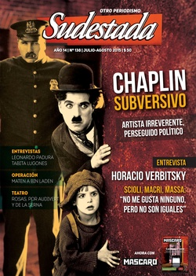

Buscar
Réplica de Marcela Santucho: "Me siento orgullosa de mis padres y de sus compañeros"
A raíz de la nota de tapa de la edición de marzo de Sudestada, Marcela Santucho nos hizo llegar una réplica en la que adjunta información y aporta su opinión sobre el tema de tapa: La caída en combate de su padre, Mario Roberto Santucho. También otro grupo de militantes del PRT-ERP escribió una carta para manifestar su disconformidad con algunos aspectos del artículo, material que también publicamos a continuación como aporte a un debate aún no saldado.
Edición N° 138
Julio 2015
Revista bimensual
Comprar edición impresaSumario
- Chaplin subversivo
- Alzar la voz
- Horacio Verbitsky: "Me llevo bien con las contradicciones de este gobierno"
- El Farmer en teatro: "Rosas es hoy una identidad clandestina"
- Leonardo Padura: "Siempre estoy entre dos fuegos"
- Operación. Maten a Bin Laden
- Réplica de Marcela Santucho: "Me siento orgullosa de mis padres y de sus compañeros"
- Los Lugones: cumbres borrascosas
Compartir Articulo
1. La pista Montonera. Firmenich no traicionó a Santucho
Yo tenía trece años cuando mi padre, Robi Santucho, murió en combate. Con mis dos hermanas, estábamos asiladas en la embajada de Cuba cuando nos enteramos, y a fines de 1976 salimos del país hacia Cuba. Estuvimos en la embajada de Cuba durante un año porque el gobierno militar no nos daba el permiso de salida hasta que, presionados por la ONU y el Papa Pablo VI (que recibió a mi abuela paterna en Italia, ya que mis abuelos denunciaban los secuestros y asesinatos de la dictadura en nuestro país), Videla y sus secuaces nos tuvieron que dar un salvoconducto para viajar, puesto que no teníamos documentos legales. Tres autos nos escoltaron hasta el aeropuerto donde los periodistas nos sacaron fotos…
En 1983 mi tía Blanca volvió al país; fue la primera exiliada de la familia Santucho en volver. Yo volví de visita en 1989, queríamos volver a vivir en nuestro país pero no teníamos apoyo económico para instalarnos, ni casa, ni trabajo, ni nada, por lo que teníamos que volver con alguna profesión. Mientras tanto venía de visita al país, cada cuatro años.
Comencé a interesarme en la lucha de mi padre y del PRT-ERP que él creó y dirigió y también con relación a la lamentable caída de la dirección, el 19 de julio de 1976. Ya había escuchado sobre la sospecha de Montoneros y tuve un encuentro con Roberto Perdía, ya que Firmenich se fue de la Argentina durante el gobierno de Carlos Menem, que instaló la teoría de los dos demonios y la desmemoria de los 30 mil asesinados. Perdía seguía en el país militando y en contacto con sus compañeros, me recibió y me dio una fotocopia de la revista Evita Montonera donde le habían hecho un homenaje a mi padre. Años después, cuando ya me había instalado en el país, lo entrevisté por ser el segundo dirigente montonero. Ya había leído Dossier Secreto de Martin Andersen, un periodista yanqui que obtuvo la información para su libro de un agente de inteligencia de la embajada estadounidense, quien daba cuenta de la teoría de que Firmenich habría dado información para la caída de mi padre en 1976. La CIA, conjuntamente con los militares argentinos, buscaba dividir las fuerzas revolucionarias y desprestigiarlas, acusando al jefe montonero Firmenich de haber delatado y traicionado al máximo dirigente del PRT-ERP, Mario Roberto Santucho, tal como hicieron con Fidel Castro y el Che, cuando difamaron a Fidel al señalar que mandó al Che a morir en Bolivia. Es sabido que el Che Guevara tomó su decisión de seguir liberando los países hermanos de Latinoamérica, y que eligió Bolivia, uno de los países más pobres en ese momento.
Es una sospecha infundada la de una supuesta traición de Montoneros. Habían pasado unos quince años cuando esta teoría volvió a aparecer en el libro de María Seoane, Todo o nada. Al enterarse, Perdía trató de acordarse de ese momento: el enlace de la dirección montonera que se contactaría con el PRT para la reunión con Firmenich había desaparecido en julio de 1976. Los Montoneros estaban escapando de los golpes de la dictadura impuesta desde el 24 de marzo, y ese 19 de julio, Perdía recordó que ellos no pudieron avisar de esa caída que podía "envenenar" la cita. Perdía trató de recordar la cita que tuvo en su casa en junio del 76 con mi padre, donde ya se perfilaba la creación de una organización que reunía a las organizaciones revolucionarias que luchaban contra los militares golpistas y que se sacrificaban viviendo en la clandestinidad, perseguidos por asesinos torturadores. Recordó que también estaba el Gringo Menna, y que Robi le comunicó que viajaría y que antes debía firmar una autorización para que nosotras, sus tres hijas, pudiéramos viajar a Cuba ya que llevábamos meses asiladas en la embajada de ese país. Ese día Robi y Perdía decidieron organizar una nueva reunión con Firmenich, para impulsar el acuerdo de la Organización para la Liberación Argentina, que finalmente no se pudo concretar.
Habían pasado 39 años, Perdía no recordaba bien a su enlace y con tantas caídas en su propia organización, trató de averiguar el nombre legal de este compañero, encargado del contacto con el PRT-ERP. El mecanismo usual era que los enlaces de las dos organizaciones se encontraban y ellos eran los que confirmaban las fechas para las citas de ambas dirigencias. Durante una reciente investigación con un organismo de derechos humanos que lleva las fechas de desaparición o secuestro de cada militante, se supo que el enlace montonero fue secuestrado el 21 de julio de 1976, es decir, dos días después de la caída en combate de Santucho. Así, la sospecha sobre la organización hermana queda descartada.
Contesto el hecho de que se hable de Perdía, cuando su actitud fue siempre de reivindicación de nuestros caídos. Respeto mucho la lucha de los montoneros y compañeros que dieron sus vidas, y a la primera dirigencia, de Fernando Abal Medina, que murió combatiendo en 1970, al que mi padre le escribió un homenaje que publiqué en mi libro Mario Roberto Santucho. Mi padre, el revolucionario místico. Los compañeros de Montoneros están afligidos con la nota de Sudestada de marzo de 2015, y por eso escribo esta réplica. Pienso como Perdía; no podemos permitir que deformen la historia y las relaciones entre dos organizaciones que enfrentaron al golpe militar más nefasto de América Latina...
(La nota completa en la edición gráfica de Sudestada)
-------------------------------------------------------------------------
OTRA RÉPLICA
(Por razones de espacio, la réplica del compañero Abel Bohoslavsky no entró en la edición gráfica. Tal como prometimos, va por este medio la versión completa)
.
"Dice mi padre que un solo traidor/puede con mil valientes"
ACLARACIONES NECESARIAS SOBRE EL INFORME ¿QUIÉN TRAICIONÓ A SANTUCHO?
Tú no pediste la guerra/madre tierra/yo lo sé./Dice mi padre que un solo traidor/puede con mil valientes;/ él siente que el pueblo en su inmenso dolor/hoy se niega a beber en la fuente/clara del honor./Tú no pediste la guerra,/madre tierra, yo lo sé
Alfredo Zitarrosa, Adagio en mi país
En el número 136 de Sudestada / número 29 de Mascaró, marzo-abril 2015 - ¡revistas auspiciosamente unificadas en una sola! – se publica como nota de tapa "¿Quién traicionó a Santucho"?, una investigación/informe redactado por Hugo Montero y con numerosos testimonios. Se trata de una cuestión histórica que conmueve y amerita una divulgación adecuada. Quienes estamos involucrados por trayectoria, convicciones y pasión en el pasado, presente y futuro de nuestra Revolución inconclusa tenemos algo que aportar. Este es el sentido de este escrito.
Abel Bohoslavsky[1]
1° de abril 2015
El informe comienza así:
"Golpean la puerta. Afuera se anuncia el portero. Nada extraño. El reloj marca las 13,30 hs. del lunes 19 de julio de 1976. Liliana Delfino se acerca y entreabre la puerta. No tendrá tiempo de volver a cerrarla. Una bota militar se interpone. El grito de alerta de Liliana invade el cuarto piso del departamento de Venezuela 1349, Villa Martelli, Pcia. De Buenos Aires. Ráfagas a ciegas, humo y pólvora, movimientos furtivos, el llanto de un niño. Cuatro miembros de un grupo de tareas asaltan el departamento a los tiros. Y aquí, en esta parte del relato, la versión se bifurca. Está la clásica, la más registrada por los investigadores: desde adentro responden el fuego como pueden, mientras en un rincón Ana María Lanzillotto protege con su cuerpo al pequeño José Urteaga, de apenas dos años. En la balacera caen tres hombres. Dos combatientes, un militar. Un combatiente es Benito Urteaga, el número 2 del PRT-ERP, la guerrilla marxista que se transformó para el Ejército en el principal objetivo por aniquilar. El militar es el capitán Juan Carlos Leonetti, que paga la imprudencia de encabezar el operativo con un balazo fatal. El otro caído es Mario Roberto Santucho, santiagueño de voz serena, líder de una generación rebelde que lo eligió como jefe de su revolución trunca. Restaban unas horas para que partiera de viaje, rumbo a La Habana. Liliana, Ana María y José son secuestrados. Ellas, desde esa tarde, permanecen desaparecidas. José volverá con su familia dos meses más tarde (…) La otra versión no difiere en los sustancia (Testimonio del ex sargento Víctor Ibáñez, incluido en Campo Santo, de Fernando Almirón). Un ex sargento que cumplía funciones en Campo de Mayo afirma haber escuchado que el comando aprovechó el factor sorpresa y redujo a todos en la casa antes de cualquier intento de defensa. Que los militares empujan a los combatientes hasta un rincón para palparlos de armas. Que antes de ser maniatados, los dos guerrilleros cruzan una mirada efímera. Un instante apenas. Lo suficiente para concentrar en ella una decisión audaz. No van a entregarse mansamente. Robi espera a que Leonetti se acerque para revisarlo, y entonces en un segundo de distracción, le practica una toma que termina con el militar en el suelo y con el fusil en manos del guerrillero. Benito intenta lo propio, pero una balacera sepulta toda resistencia"
Aquí hay que señalar un error: Ana María Lanzillotto, la dueña de casa junto a su pareja, Domingo Menna, no estaba a esa hora en su departamento. Había salido, precisamente para dar un alerta a una familia de colaboradores, lejos de allí. Ese alerta provenía de la captura de un integrante del PRT (Pablo Pavich, el Niño Pascual), el 8 de julio, tras la cual se sucedieron muchas caídas de viviendas de la organización que él conocía. Y con eso, decenas de militantes. El alerta fue muy acertado, ya que esa otra casa fue asaltada por los militares esa misma noche. Ana María salió de ese lugar a eso de las 14 hs. y llegó a su casa aproximadamente a las 16 hs. y fue capturada, ya que los militares dejaron dentro del departamento una "ratonera", sin ningún despliegue militar en los alrededores del edificio. Secundariamente, debemos señalar a título informativo que el destino inicial de Santucho era Roma, donde lo esperaba Gastón, entonces responsable de la estructura del PRT radicada en Europa.
La pista Montoneros (así titulada por la revista)
El informe la da como posibilidad por el hecho de que el 19/7/76 debía realizarse la reunión Partido Revolucionario de los Trabajadores-Montoneros para suscribir un acuerdo político que daría origen a la Organización para la Liberación de Argentina (OLA), frente que también comprendía a la Organización Comunista Poder Obrero (OCPO) y sus Brigadas Rojas. Inicialmente esa reunión estaba prevista para el 12/7 y se pospuso a pedido de Montoneros. Mario Roberto Santucho insistió en que él debía estar presente, a contrapelo de lo que decían otros miembros del Buró Político (BP) del PRT (según Luis Mattini, no contradicho por nadie). El enlace para esa reunión por el PRT era Fernando Gertel que fue a la cita, lo clavaron, avisó a Liliana Delfino (¿dónde?), la compañera de Santucho.
* Mattini – en otros testimonios – ha dicho que a la tarde él iba a despedir a Mario Roberto Santucho (en adelante MRS) y que antes llamó por teléfono al departamento de Menna, identificándose como 'Flores'. Lo atendió una voz de varón desconocida que le dijo que estaba todo bien. Ahí se dio cuenta de algo raro. Dio vueltas por las cercanías, no vio nada y se fue (esta parte no está en la entrevista en la revista, pero es lo que él ha dicho públicamente otras veces; personalmente lo escuché en vivo, cuando testimonió en octubre de 2012 en el Tribunal Federal de San Martín, en la causa Campo de Mayo, robo de bebés). Este dato es importante, ya que eran varios miembros del BP del PRT que irían a despedir a Santucho.
* Por parte de Montoneros, del enlace que no fue – o fue para "marcar" a su contraparte del PRT -, se sabe que su responsable era Roberto Perdía, de la Conducción. Perdía dio después tres versiones contradictorias consigo mismo y por eso, despierta sospechas[2].
* Daniel De Santis es el único de los testimoniantes convocados por la revista Sudestada que sospecha de la conducta de Montoneros, basándose en su reunión previa - mayo 1976 - con el miembro de la Conducción de Montoneros, Juan Julio Roqué (Iván o Lino), diciendo que éste estaba muy insistente e interesado en el frente PRT-Montoneros: "Fue iniciativa de ellos y había un gran interés. Hablamos de mayo de 1976, cuando se retomó la relación, se sumó la OCPO, y hasta había un nombre, la OLA…".
De Santis contrasta esta postura con las versiones de Perdía: la primera, que había caído el enlace de Montoneros, pero supuestamente no sabían que había caído (¡dos a tres semanas antes!); la segunda, que había caído ese enlace, pero que no tenían forma de cómo avisar, que intentaron avisar por vías laterales y que no sabían si ese aviso había llegado al PRT; y la tercera, que habían resuelto no hacer el frente PRT-Montoneros por una revalorización política del peronismo. "Perdía primero dijo que el 19 de julio ellos iban a interrumpir la relación y yo creo que es mentira, porque si es verdad es peor aún". La sospecha de De Santis es fundada[3].
De Santis afirma que Gorriarán Merlo (Pelado) también tenía esa sospecha, pero que públicamente decía lo contrario para, eventualmente, poder investigar sin despertar alertas. Mattini dice que la sospecha sobre Montoneros podía ser válida y razonable, pero no asegura nada ni investigó al respecto. Rolo Diez (ex PRT, otro testimoniante citado) dice que las respuestas de Perdía no son aceptables y deja abierta la sospecha. No hay opinión de Pola Augier, también citada en el informe, sobre esta pista.
Esta pista, así expuesta:
1) omite un dato importante: para la reunión PRT-Montoneros en noviembre 75, el enlace de esta organización fue Héctor Talbot Wrigth, Juan. Todo lo que sigue, me lo dijo personalmente Mingo (Domingo Menna) días después. La cita era en un lugar del oeste del Gran Bs. As. Fueron él y Santucho. El enlace tardó más de la cuenta en llegar. Un Falcon pasó varias veces y cuando Mingo lo detectó, le dijo a MRS que si volvía a pasar, se tenían que ir. Por fin el Falcon paró y el chofer le grita "¡Gringo, Gringo!". Mingo lo reconoce y suben. Juan les dice que en un maletín hay una ametralladora Uzi. Mingo protesta porque el acuerdo era que todos se iban a trasladar sin armas. MRS dice que dejara de lado eso y que vayan de una vez. La reunión fue en una casa/quinta. Los montoneros que estaban en la reunión eran: Mario Eduardo Firmenich, Roberto Quieto, Adriana Lesgart, el Gordo Ayo y otros que no me mencionó (datos a tener en cuenta: Adriana y Ayo conocían muy bien a Mingo, ya que ambos fueron del PRT en 1966 en Córdoba). La discusión fue variada y tocó hasta temas filosóficos, en los que MRS habló de Materialismo y empiriocriticismo de Lenin. Según Mingo, Firmenich estaba anuente al acuerdo y que tenían mucho respeto a MRS al que homologaban a "un caudillo". Haber usado Montoneros un enlace como Juan, sabiendo que iba Mingo, parece muy coherente, ya que se conocían desde 1966 (ambos estudiaban Medicina y eran activistas del Centro de Estudiantes), se reconocían fácilmente y no hacían falta contraseñas.
2)Lo que probablemente Mingo no sabía es que Juan era miembro de Inteligencia de Montoneros y fue su responsable (no sabemos si en ese momento). El grupo de Inteligencia que dirigía Juan, estaba integrado entre otros por Rodolfo Walsh. Ese grupo fue posteriormente duramente crítico con la Conducción de Montoneros al punto de plantearse, sin concretar, una separación en el segundo semestre de 1976. El 16 de octubre de 1976 Juan cae en una cita envenenada, cita a la que fue casi forzado, habiendo advertido a otros de sus compañeros que estaba cantada. La persona que cantó esa cita es sobreviviente y le contó esto al hijo de Juan.
Interrogantes:
a) ¿Por qué Montoneros cambió de enlace con el PRT?
La sospecha de De Santis se incrementa con este dato que ni él sabía y que aparentemente Mattini y Gorriarán tampoco. Se puede alegar – con razón – que desde noviembre '75 a julio '76 pasó mucho tiempo y los cambios de tareas eran frecuentes. Pero llama la atención que el cambio de enlace pasó a un militante que dependía de un miembro de la Conducción de Montoneros que, además de sus contradictorias versiones, ratificó su desacuerdo con el proyecto frentista de la OLA. Anteriormente, ya había habido una reunión Santucho-Perdía en la casa del dirigente de Montoneros.
b) ¿Dónde y más o menos a qué hora, Fernando Gertel le avisó a Liliana Delfino que lo habían clavado a la cita? Porque a quién eventualmente pueden haber seguido es a él.
Aquí el informe de la revista dice:
"¿Fue casualidad que Gertel fuera secuestrado durante una cita envenenada en San Antonio de Padua la misma tarde del 19, o la inteligencia militar priorizó un seguimiento hasta dar con el departamento de Villa Martelli, y antes de decidir caer sobre él horas más tarde?".
Gertel fue capturado en San Antonio de Padua, pero la fuerza de tareas no descubre a su compañera Diana Cruces que lo había acompañado. Parece imposible que Gertel haya sido objeto de un seguimiento de los militares. Después de la cita clavada con el enlace de Montoneros, regresó a su casa en Boulogne, buscó a su compañera, tuvieron un previo encuentro con otro compañero, se dirigieron en auto a Padua, dejando el vehículo estacionado a unos 20 metros de la esquina donde estaba el bar de la nueva cita. Ella cruzó en diagonal hacia un negocio con su hijo en brazos y al salir, vio una camioneta que salió a toda velocidad, en medio de gritos de los vecinos que decían que se habían llevado a dos jóvenes[4]. Nunca se pudo saber con quién Fernando tenía allí una cita y quién fue el otro compañero secuestrado. ¿De Montoneros, de OCPO, o del propio PRT? Clarita Gertel, la madre de Fernando, estuvo dos semanas después en ese bar de Padua, hablando con el dueño, pero no pudo obtener información adicional. La casa en Boulogne donde convivían los padres de Fernando con la pareja y el niño, nunca cayó y el resto de su familia, siguió viviendo allí, lo que es elocuente de la conducta de este militante revolucionario en las garras de los genocidas.
c) Esta pista tampoco explica la caída de Mingo Menna en la mañana del 19/7. No explica por qué si lo siguieron a Gertel (posibilidad que parece descartada en el punto anterior) desde la cita clavada con el enlace de Montoneros que había caído (¿y cantado?), ¿cómo lo capturan a Mingo? Si Mingo no había regresado a su casa, ¿esto no llamó la atención de los que estaban ahí?
La pista "cordobesa" (así calificada por el redactor del informe)
* El informe se centra en una sola persona, el Negro, sobre quien dice que va a omitir su nombre legal, pero durante el relato y las entrevistas a Mattini y De Santis, se consignan datos que varios cientos de perretistas (y en Córdoba muchos que no lo fueron) pueden identificarlo inmediatamente (dirigente de SITRAC/SITRAM, cuñado de Mauro, diabético, fecha de su reciente fallecimiento).
* Las pistas más firmes son de Pola Augier (autora del libro Los jardines del cielo – Experiencias de una guerrillera), encargada de la investigación inicial de estas caídas. El Negro (delegado en FIAT-Concord, que ingresó al PRT en 1971 en el frente fabril FIAT), fue apresado en agosto del '75, fue muy torturado (hizo un coma diabético), y finalmente liberado poco tiempo después con la opción del PEN junto a muchos otros compañeros del PRT, no así su esposa. El Negro fue incorporado como miembro del Buró Político del PRT por iniciativa de MRS tras la caída de Eduardo Castelo (el Negrito Hugo, ex dirigente de SITRAM), en abril del '76. La sospecha es que supuestamente arregló su propia libertad para mantener con vida a su esposa y se habría convertido en colaborador de los milicos a partir de ahí (Advertencia: alguna situación similar existió en otro caso de sospecha posterior, que NO es mencionado en el artículo/informe y sobre la cual vamos a volver).
El informe dice correctamente que "el Servicio de Inteligencia del Ejército utilizaba la presión a militantes que habían sido detenidos y, a través de amenazas sobre algún familiar – al que generalmente mantenían en cautiverio o vigilado – se procuraban información". El informe destaca a Pola como investigadora del caso del infiltrado en Monte Chingolo, Jesús Ranier, el Oso[5]. Rolo Diez afirma que "los aparatos tenían mala prensa en el PRT". Dudosa y hasta diría errónea opinión que el artículo deja como cierta. Cabe agregar que colaboré con una incipiente Inteligencia en 1969-70 y trabajé en el "aparato" de Propaganda Nacional en 1971 y puedo contrariar esa apreciación; es más, diría que tenían internamente cierto "prestigio").
El informe no menciona ni detalla las pistas de la sospecha de Pola sobre el Negro, (es decir, los hechos concretos por los cuales descubrió su eventual entrega de datos), pero su relato en su libro es elocuente y la mayoría de la militancia que la conoce, le tenía confianza (incluso militantes que después de la fractura del PRT en el exterior, estaban en el sector opuesto). Mattini y De Santis aportan una sospecha similar sobre el Negro surgida de las caídas en la Regional Rosario en 1976 donde estuvo como responsable (los compas rosarinos lo "detuvieron", pero es el propio Mattini quien desactivó esa actitud y se lo llevó a Buenos Aires). Mattini agrega que además, en fecha 19/7/76, el Negro estaba ausente (no dice dónde fue) y él asume la responsabilidad de haber clausurado esta investigación sobre las caídas del 19 de julio, ordenándole a Pola "¡Basta!". El sospechado mantuvo su cargo en el Buró Político.
Esta pista así expuesta en el informe:
1) No aclara si el Negro conocía la casa de Mingo (aparentemente sí) o, si él fuese el delator, se hubiese hecho seguir por el espionaje militar para "encadenar" seguimientos hasta llegar a Mingo, o a otro miembro del BP que habitualmente fuese a la casa de Villa Martelli.
2) No aclara cómo zafó Carlos Germán, Mauro, que también iba a ir a despedir a MRS en esa casa, esa misma tarde (recordemos que Mauro y Negro eran cuñados y amigos). Mauro cayó, solo, el 13/11/76, entre Pergamino y San Nicolás, tras numerosas caídas en esa Regional los días anteriores.
3) La desestimación de Mattini no parece fundada (alega el pánico que hubiese creado y explica que ese pánico es más destructivo que un infiltrado), ante la contundencia del informe de Pola. Y queda claro que Mattini desestimó sospechas sobre el Negro que, así, nunca pudieron ser aclaradas. Y esa conducta es contradictoria con otra sospecha de él mismo sobre otro compañero, que tuvo en otro episodio posterior que veremos más adelante.
La pista del nebulizador (también denominada así por el informe)
Esa pista dice que cuando Mingo fue capturado en la mañana del 19/7, llevaba consigo el recibo de un nebulizador alquilado para su hijo, donde estaba la dirección de su departamento de Villa Martelli. Según el informe, es una pista falsa tirada como "carne podrida" por la Inteligencia del Ejército. El informe pone en duda que Mingo haya ido a esa cita con el recibo y su dirección y se pregunta: "¿No sigue siendo más tolerable imaginar que el dato - aportado por los servicios del enemigo, queda dicho - no fue un elemento de distracción con el objeto de resguardar al informante?".
El informe afirma: "Sólo a través de una infidencia militar – voluntaria o no – pudo conocerse en detalle, de allí que sea señalada por otras voces como parte de una maniobra que, en su momento, procuraba proteger al verdadero informante".
Sin embargo, esta información fue corroborada por miembros del Equipo Argentino de Antropología Forense (EAAF) que entrevistaron al dueño de la farmacia donde Mingo alquiló el nebulizador.
¿Pero cómo llegaron los milicos a Mingo esa mañana?
"Debía encontrarse con Gustavo, un viejo conocido de Córdoba, al que todos llamaban 'el médico' porque había sido responsable de Sanidad en esa Regional". Citando a Plis Sterenberg[6], el informe dice que la compañera de un tal Gustavo, también militante, había sido secuestrada el 15/7 y "frente a la angustia por intentar salvarla, Gustavo se presentó de modo voluntario en la sede del Batallón 601 con una oferta desesperada: canjear la vida de su compañera por una cita con Menna". Mingo fue a la cita y allí cayó. También afirma que Gustavo fue secuestrado y su compañera nunca apareció (no da el nombre de ambos desaparecidos). El mismo informe admite que en Mingo "pudo más la actitud solidaria con un compañero en apuros que las normas de seguridad" y Mattini, confirmando que fue a una cita en esas circunstancias, dice que "fue una negligencia suya".
Una pista desestimada en el informe
Aquí caben muchísimas y extensas consideraciones:
1) El informe dice que Gustavo "el médico", era ex responsable de Sanidad de Córdoba. Se trata de un error. En 1973-74, el responsable de Sanidad Córdoba era Ivar Brollo, Manuel, caído en combate en Villa María el 10/8/74. Le sucedió en esa responsabilidad, Raúl Elías, Nicolás, caído los primeros días de abril de 1976. No se sabe si después de esa caída quedó algún responsable. Si hubiese sido así, que se tratase de un supuesto "responsable de Sanidad de Córdoba", Gorriarán lo debería conocer muy bien, porque era el Jefe del Estado Mayor de la Compañía Decididos de Córdoba en ese período de la caída de Elías y lo debería haber designado él. Jamás el Pelado hizo referencia a eso. Sí se sabe que Gustavo y su compañera están desaparecidos - el dato lo aporta Mattini. Las preguntas que surgen entonces son: ¿cómo no aporta sus nombres? ¿Siguen siendo desaparecidos NN?
2) Aquí, llamativamente, el informe desestima otra pista similar (¿o es la misma?), de esta manera, en una llamada al pie:
"Algunas décadas después, se generó una confusión o una mala lectura de la información disponible con respecto al 'Médico' en cuestión, confundiendo su identidad con la de un compañero sobreviviente. Para el caso vale repetir que tanto Gustavo como su compañera están desaparecidos".
El informe (y la versión de Mattini) habla de "el médico", a secas. Pero desde esa época, recuerdo perfectamente que esa pista/versión daba dos datos: "médico" y "Liga". Y este detalle no es menor. Y no es de "décadas después" como erróneamente sostiene el informe.
3) Aquí es necesario contraponer a este relato, otro que se superpone en algunos datos y que ayuda a desentrañar cosas de esta pista.
3.1 Desde agosto 76 supe por relato de Eduardo Merbilháa, Alberto, (que era mi responsable) y por el Sopa Oscar Guidot (que también dependía de Alberto) que la cita de Mingo era con un médico, que seguramente conocía a Mingo y que pertenecía a un grupo denominado Liga Comunista.
3.2 Este dato, "médico y Liga", es corroborado por el sobreviviente del Campo de Mayo, el colimba Eduardo Cagnolo, que compartió cautiverio en Campo de Mayo con Mingo y con Alberto. Alberto le dijo claramente que la caída de Mingo se debía a un médico de la Liga Comunista (este testimonio está publicado en la revista Sísifo II [7] y además, me lo contó personalmente Cagnolo. Fue una conversación muy breve en las condiciones de cautiverio). Es necesario reiterarlo, ante la desestimación que hace el informe de la revista:
"Cuando le comenté esto a Merbilháa, me preguntó si no lo había visto al 'Gringo' Menna, en el otro pabellón. Le dije que sí, que estaba enfrente de mí y también le conté que quería fugarse, me había preguntado si conocía la zona. Y que el saco de corderoy marrón que yo tenía era de él. Entonces me relató cómo había sido su caída: al igual que él, había concurrido a una cita con un representante de una Liga de 'no sé qué', y que era un infiltrado y lo secuestraron. En el bolsillo del saco tenía un teléfono de la inmobiliaria donde había alquilado el departamento en Villa Martelli, averiguaron en la inmobiliaria y lograron la dirección; cuando fue el Ejército estaba Santucho y pasó lo que pasó. Él, Merbilháa, vivía tres pisos más debajo de Menna…"
3.3 La Liga Comunista (LC) era un grupo, continuidad de algunos militantes de lo que fue la "Fracción Roja" (separada del PRT en el '73). En Córdoba, no hubo ningún miembro del PRT que se pasara a ese grupo, salvo uno. Se trataba de un estudiante de Medicina que nunca tuvo actuación pública, que militaba en un equipo militar con Ivar Brollo desde 1971-72. Ivar sabía ya en 1973 que "Narigón" se había ido con la FR. Aunque no hubo nadie en Córdoba que se fuera a ese grupo, el itinerario y el vínculo que tomó el "Narigón", se explica porque él había sido destinado a Buenos Aires y allí integró equipos con militantes que se fueron a la FR. Tiempo después, la FR se disgregó: unos formaron la LC, otros conformaron una tal Liga Comunista Revolucionaria (LCR) y otros se vincularon al Grupo Obrero Revolucionario (GOR).
3.4 En agosto '76, junto con los datos "médico" y "Liga", nos transmitieron esta versión (insisto, versión): tras el golpe, los pocos miembros de esa LC estaban desarticulados y se contactaron con el PRT para, supuestamente, reincorporarse. El vínculo había sido Mingo (porque alguien lo conocía) y él le pidió a su compañera Ana María que los atendiera.
3.5 La información que nos llegó fue que el "Narigón" (o la Any) le dijo a Mingo que su compañera estaba con una grave crisis, con trastornos psíquicos por la represión y le pidió a Mingo que le consiguiera atención psiquiátrica. Mingo se ocupó de eso y, probablemente, lo intentó contactar (o lo logró, no lo sabemos) con el psiquiatra Juan Carlos Risau. Digo que fue probablemente con Risau porque Mingo tenía vínculo directo con él. Risau, presidente de las Federación Argentina de Psiquiatras, era miembro secreto del PRT.
3.6 Lo que ocurrió fue que la compañera del "Narigón", había caído en esos días y él negoció con los militares su libertad a cambio de una cita con un miembro del BP del PRT. Mingo le iba a pasar el enganche con el médico en la estación Rivadavia del Ferrocarril Mitre (o cerca de ahí) y el tipo llevó allí a los milicos que lo capturaron, aparentemente muy desprevenido, porque no hay testimonios de pelea alguna, resistencia o bien tiroteo. Risau fue secuestrado dos días después, el 21/7/76. Hecho congruente con esta versión. Y otro dato más: el 13 de julio había sido secuestrado el psiquiatra Raúl Haroldo Fuentes, también integrante del PRT, que era conocido de Mingo y mantenía vínculos con Risau. Es probable que Risau le haya derivado la atención de esa "paciente" (la esposa del "Narigón") a Fuentes y haya habido un seguimiento por parte de los militares. El encadenamiento de seguimientos en esos días pueden explicar cómo la Inteligencia del Ejército pudo haber llegado a dar con Mingo Menna y la "punta" puede haber sido el episodio que describimos.
3.7 Siempre tuvimos conciencia de que toda esta versión podría ser "carne podrida" tirada por los milicos sembrando una pista falsa. En 2013, personas dedicadas a la investigación Campo de Mayo me mostraron una foto e inmediatamente reconocí al "Narigón".
3.8 El "Narigón" - que es médico de profesión - confirmó que su compañera había estado secuestrada, hecho que nunca había contado siquiera a sus amigos íntimos, gente de izquierda y vinculada a organismos de derechos humanos, lo cual puso en evidencia un ocultamiento mantenido durante más de 35 años. El "Narigón" dijo que el secuestro fue en la ESMA y que la libertad de su compañera la negoció el padre de ella, que era miembro del Partido Comunista (ambos datos no corroborados). El "Narigón" confirmó que sí conocía a Mingo y admitió el secuestro y liberación de su compañera (que es una persona pública y conocida como "progre"), justificando su silencio por las secuelas de la represión. A estas personas, que lo conocieron en los años '90, nunca les contó su trayectoria militante.
3.9 Como se ve, este relato se parece al del informe de la revista, pero NO es igual. El informe da como pista desechable la del "médico Gustavo" por ser supuestamente brindada como pista falsa por los milicos. Parece haber ocurrido exactamente lo contrario. Si tomamos todas las pistas mencionadas, ésta se trata de la más firme sobre cómo llegaron a capturar a Mingo. Pero no se puede llegar a saber cómo llegaron a la casa de Villa Martelli, abriendo la posibilidad que la hipótesis del recibo encontrado fuese el camino – confirmada por el EAAF – o el teléfono de la inmobiliaria (una información no confirmada dice que el Ejército trabajó sobre escrituras "sospechosas" proporcionadas por la inmobiliaria).
4) El informe asegura que Mingo fue a la cita por actitud "solidaria". Pero no refiere la versión de que fue para ayudar a una compañera supuestamente enferma. El informe, sin afirmarlo, deja entender que Mingo fue, sabiendo, a darle una mano a un compañero cuya pareja había sido secuestrada. Mingo era temerario y negligente y, solidario a toda prueba. Me consta y les consta a todos los que convivieron y compartieron con él. Pero no era improvisado para nada y bien sabía que, si iba a una cita con un compañero al que acababan de secuestrar su compañera, no hubiese acudido en la forma que fue. Mingo nos daba instrucciones en seguimiento, ruptura de seguimiento, chequeos, recolección de información, desinformación, etc.
En mi opinión, esta parte del informe de Sudestada, por su trascendencia y la repercusión que ha causado el artículo, debería ser corregida expresamente en el ejemplar siguiente.
La pista Pelado
En el informe se relata que Matías, un miembro del grupo de Inteligencia partidaria, sembró una sospecha sobre Gorriarán y terminó temporalmente detenido él mismo. Para Mattini "sospechar sobre un insospechable hacía revertir la sospecha sobre el sospechante". Y resolvió disolver ese organismo interno. Pola, la responsable, no dudó jamás del Pelado y tampoco de Matías por su actitud. Gorriarán parece haberse inmutado poco ante semejante sospecha. Pero el informe dice que "para el Pelado estaba claro que había un plan para desacreditarlo a través de la desconfianza". Esta opinión vertida en el informe es cuestionable. Todos en el PRT supimos que Gorriarán fue sancionado y desplazado del BP mucho tiempo antes de estos hechos, por haber detenido, enjuiciado y ejecutado a un sospechoso de ser agente de la D2 cordobesa, sin que la imputación fuese debidamente probada. Un acontecimiento como ese fue el que sembró la disconformidad y desconfianza sobre él y no un "plan para desacreditarlo". El propio Mattini – contradictorio, una vez más - que ahora dice que era "un insospechable" fue quien informó al resto de la militancia que, ante aquel episodio del pasado, fue Mingo Menna quien aseveró ante la Inteligencia cubana que, por ese hecho, "ese hombre no vuelve más al Buró".¿Fue así o es otra "versión" de Mattini?
Sobre esta falsa pista que el artículo de Sudestada pone de relieve, es cuestionable en mi opinión la forma en que es presentada al lector que desconoce los hechos y la historia del PRT.
La pista que rompió al Partido (así la califica el informe)
El informe empieza con un recuento de derrotas, fracasos y traspiés del PRT entre 1977-78, con un proceso de división en la dirección exiliada. Los miembros formales del BP eran: Mattini, Leopoldo, Negro, Pelado y Vasco. A esa altura, las opiniones políticas, dividían a los tres primeros enfrentados a los dos últimos. Ahí aparece, entre España y Francia (1978), una imputación contra el Vasco.
El informe dice: "…puesto al tanto de las sospechas que pesaban sobre el Vasco y en su carácter de secretario general, Mattini resolvió organizar una operación para determinar la veracidad de la denuncia".
Desde ya, aclaremos (porque el informe no revela nada al respecto), nunca se informó de ninguna "denuncia", sino de una sospecha, que, internamente y en forma oral, Mattini la transmitió como que "los cubanos me dijeron que teníamos un infiltrado a nivel de Buró". Incluso dijo en qué lugar del mundo se había producido esa reunión, durante la cual, a su vez, dijo, "sentí que me estaban interrogando".
Como el Pelado tenía una supuesta asociación con el Vasco, resolvieron darle toda la información sobre la sospecha a él, para que se desligase de ser contaminado con esa sospecha y facilitase la operación para determinar la veracidad. El Pelado aceptó colaborar, tuvo además una larga y fraterna reunión con Mattini (es su propia versión) y se fue: posteriormente alertó al Vasco y desaparecieron de la vista del resto del BP. Dada esta situación, el resto del BP (Mattini, Leopoldo y Negro), acusaron públicamente al Vasco como infiltrado o colaborador con el enemigo y traidor al Pelado por haber dicho que colaboraría y haber hecho justamente lo contrario.
El PRT en el exilio (el informe no resalta que ¡la militancia sobreviviente en el país estaba totalmente ajena a esto!) se partió en dos y cada sector tomó su propio rumbo: "La división era un hecho. El Partido de Santucho, el Partido de la revolución argentina, dejaba de existir" dice – a mi juicio erróneamente – el informe. Para De Santis, este episodio "no fue el detonante sino la estocada final", opinión con la cual coincido.
La acusación en Tribunal partidario – y la defensa del acusado – nunca ocurrió. Mattini dice ahora "que no teníamos infiltrados a nivel de Dirección" (¿?)… "la historia demostró que nos equivocamos de medio a medio y yo estoy esperando todavía la oportunidad de encontrarme con el Vasco para pedirle disculpas…quedó escrachado para toda la vida, si lo veo, le voy a pedir perdón".
Esta "pista", su relato a partir del testimonio de Mattini, amerita muchas aclaraciones:
1) Como ya se ha señalado, Mattini solo relata una sospecha, pero no cuenta dónde y cómo surgió, que es lo más importante en una cuestión de esta envergadura. No se priva de hablar varias veces de su relación con "los cubanos": en una ocasión menciona expresamente a Piñero, en otra habla de una eventual reunión de MRS con Fidel, pero no cuenta lo que él dijo a la militancia: que fueron "los cubanos" los que lo alertaron. Y ese "argumento", dentro del PRT pesaba mucho, infundía respaldo, respeto y aprobación.
Lo que sí pudimos saber después que Mattini se retiró del PRT, es que en una reunión mantenida en Nueva York en 1981 por el Negro y un miembro de la Inteligencia cubana, en presencia del compañero Hugo (que fue quien gestionó el encuentro), el cubano afirmó rotundamente que ellos no habían sido los que dieron esa sospecha.
2) Mattini no aporta ninguno de los datos que llevaron a esa sospecha. Por ejemplo: ¿Conocía el Vasco la casa de Villa Martelli? ¿Sabía que Santucho estaba allí? ¿Sabía de la cita de Mingo con "el médico? ¿Sería él uno de los que iría también a despedir a MRS? ¿Hubo otra caída importante relacionada con el Vasco? A esta altura, habiendo revelado todo (lo poco) que contó ¿por qué no lo hace?
3) Otra cuestión omitida por Mattini, son cosas que a él sí le llamaron la atención en aquellos momentos y que las comentó en relación a esa acusación encabezada por él.
3.1. Mattini reveló en 1979, luego de la denuncia pública, que ninguno de los miembros del BP sabían el nombre legal del Vasco y que Inteligencia tampoco. ¿Cómo? Sí, así como escuchan (o mejor leen). Cuando él nos lo planteó, yo no lo podía creer y en la actualidad tampoco se lo sigo creyendo. Sin duda que el Negro (que estaba en el grupo del BP junto a Mattini) lo conocía al Vasco de Córdoba y, si no sabía su nombre legal (cosa más que dudosa), lo averiguaba al toque. Leopoldo lo mismo, porque estuvo de responsable político en Córdoba.
3.2. Mattini también reveló que a él siempre le llamó la atención que el Vasco contara que, siendo cordobés, tuvo que ir a Tucumán para contactarse con el PRT y así pedir su ingreso. Mattini decía, con razón, que en Córdoba, parándose en la entrada de Luz y Fuerza cualquier tarde, se contactaba con cualquiera del PRT. Si ese relato de Mattini es veraz, ¿cómo a nadie más le llamó la atención durante tanto tiempo?
3.3. Si bien este relato de Mattini siempre me hizo dudar de su veracidad, quien me lo despejó fue el propio Vasco: en dos oportunidades, he visto testimonios de él contando esa versión, diciendo que por medio de grupos cristianos de base dentro de los que él militaba en Córdoba, viajó a Tucumán y conoció al Negrito Antonio del Carmen Fernández y así ingresó al PRT. El primer testimonio lo leí de una de las 72 entrevistas que hizo el historiador Pablo Pozzi para su libro Por las sendas argentinas - El PRT-ERP, la guerrilla marxista.
Es lo dicho por el Vasco. Y aquí puedo afirmar que es falso. En 1971, Julio Parra era responsable de parte de la Dirección de atender la Mesa de Dirección del Frente Estudiantil de Córdoba (en ese período yo integraba el "aparato" de propaganda con Julio y él me pidió que lo acompañara, ya que desconocía todo acerca de ese frente). En una ocasión, Norma informó que se había captado un compañero que provenía de grupos tercermundistas, que el informe era muy positivo, pero hacía falta una última decisión para incorporarlo como aspirante. Norma pidió que yo fuese y me dio la cita, con contraseña. Cuando acudí a la cita, lo vi llegando al Vasco, sonriente y yo respondí con la misma sonrisa y un "Ah, ¿sos vos?". Lo conocía desde 1969 y había intentado captarlo, pero él tenía dudas sobre nuestra línea. La nueva charla fue breve, plena de chanzas y quedamos muy contentos los dos. A la siguiente reunión informé en la Mesa que no hacía falta más nada para admitirlo como aspirante, que yo lo conocía de hacía tiempo. Y así ingresó al Partido el Vasco. ¿Por qué mintió el Vasco en los testimonios? No lo sé, ni entiendo el motivo. La duda que me había dejado Mattini se me despejó, muchos años después. Lo que Mattini contó era cierto y, en este asunto, quien mintió fue el Vasco. Yo compartí militancia con él en dos frentes, teníamos mucha confianza mutua y discrepancias filosóficas – él es creyente y yo ateo -; él fue quien me pidió en mayo '76 que me hiciese cargo de la dirección de las Escuelas del partido. Pero nada de esas dudas que Mattini tenía antes como razón de su sospecha parece recordarlas ahora. Me resulta sinceramente extraño.
3.4. Mattini omite otro dato muy importante con el cual él acusó al Vasco: en abril 75, la compañera de Vasco fue secuestrada en Córdoba. Dijo Mattini que el Vasco "desapareció" durante dos días de sus lugares y tareas (era miembro de la Dirección Regional). Según Mattini, la sospecha era que en ese lapso él hubiese negociado con los milicos la vida de su compañera, a cambio de permanecer en la estructura y ser informante (algo similar a la sospecha sobre el Negro del BP que él desestimó). El relato era creíble, la sospecha era creíble, dada la circunstancia. A esa altura (1979) ninguno de los compañeros de Córdoba, teníamos ninguna información acerca de la desaparición o sobrevivencia de la compañera del Vasco. Pero el Secretario General y ex miembro de Inteligencia partidaria sí podía saberlo. Mattini mintió. La compañera sigue desaparecida.
3.5. Mattini dice ahora que quiere pedirle perdón al Vasco. ¿Cómo? ¿No le alcanzaron 36 años? Para los que no lo saben, el Vasco es una persona pública actualmente, actúa políticamente y es bien conocido. Ante semejante "acusación" - con sus consecuencias personales y políticas - que él mismo deplora ahora, este gesto de aparente bonhomía, es una hipocresía intolerable. Pedirle perdón por medio de una entrevista periodística sin antes hacerlo personalmente, lo descalifica.
Datos que faltan
En todos los testimonios vertidos en el informe de Sudestada, llamativamente falta algo. Luego del asalto y tiroteo en Villa Martelli, Alberto llegó al edificio con su compañera (vivían en el segundo piso, no en el de abajo del cuarto, como consigna el informe). Entre 10 y 15 días después de ese fatídico 19 de julio, Alberto me informa que:
1) Él y su compañera llegaron al edificio en auto a media tarde (según testimonio del portero alrededor de las 15 hs.), sin inconvenientes. No había pinzas ni evidencias de presencia policial o militar.
2) Al intentar ingresar al edificio, el portero los para y le advierte: "Mire que del departamento de sus parientes sacaron dos cadáveres". Aclaración: Alberto vivía en el edificio antes que Any y Mingo. Como iba a ser evidente que tendrían algún vínculo visible, hicieron un minuto (coartada), explicando que eran parientes, sin precisión de ese parentesco, y así los conocía el portero.
3) Alberto y su compañera, más que sorprendidos, se detuvieron. Alberto le dice a su compañera: "Vamos a avisarle a los parientes". Se volvieron al auto sin impedimento y se fueron sin ser ni cazados por alguna pinza ni seguidos.
4) Fueron hasta La Boca, a la casa de Lito Falicoff (Darío), donde estuvieron el resto del día escuchando las radios. "Yo rogaba que el Negro (Santucho) hubiese bajado a comprar puchos" me contó Alberto sobre su calvario esa tarde.
De este relato que recibí personalmente en días posteriores al 19//76, de boca del único compañero que estuvo en el lugar de los hechos momentos después del asalto, nadie hace referencia. ¿Por qué?
Conclusiones preliminares:
* Así como está presentado el informe de Sudestada ¿Quién traicionó a Santucho"? y dados los testimonios ofrecidos, lo primero que puedo decir es que coincide la clarísima frase de De Santis afirma con claridad: "Cuando alguien no dice la verdad, es porque está ocultando algo". Como se puede leer en estas líneas, son varios los que no dicen la verdad, porque ocultan, omiten hechos y circunstancias o bien deliberadamente mienten.
* He aportado lo que sé, que son datos y hechos, no verdades reveladas, que cuestionan muchas de las versiones presentadas en el informe. Pero es nada más que otra versión en la cual las afirmaciones, son perfectamente demostrables. Entiendo que la importancia histórica de esta cuestión, amerita un mayor grado de rigurosidad.
* Y en cuestión de valoración histórica, decir – como lo hace el informe – que el PRT dejó de existir ante la pelea de los cinco miembros del BP o los once del Comité Central, en el exilio, es una apreciación a mi juicio que ignora la esencia de lo que era el PRT como Partido de la Revolución. El PRT dejó de existir cuando la organización no pudo sacar más su periódico, cuya existencia era algo más que un ritual: era casi nuestra razón de ser como partido revolucionario. El PRT dejó de existir cuando no pudimos sostener más los equipos, los frentes fabriles, el trabajo de masas, los volantes y las pintadas, las escuelas de formación. El PRT dejó de existir cuando no pudo más incidir en la vida política y las luchas de clases en el país, lo que ocurrió por el éxito de la contrarrevolución armada. En su breve trayectoria histórica, el PRT tuvo escisiones y divisiones, pero después de cada coyuntura, su organización se incrementó luego de debilitamientos temporales. Ya en la reunión del Comité Ejecutivo de abril 1977 (en Brasil), Mattini admitió que él nunca estuvo muy convencido de la línea y que en rigor, él seguía a Santucho. Más allá de esta autoconsideración, es de destacar todo lo que el informe pone de relieve: militantes desorientados por los durísimos golpes recibidos, sin capacidad de dirección para reorganizar al partido diezmado, a pesar de los esfuerzos de quienes quedaron en el país. Presentar el cese de la existencia del PRT como resultado de esa pelea interna de 1978-79 fuera del país, es un error de valoración histórica.
* Todas estas aclaraciones necesarias, no deben hacernos perder de vista la cuestión central de aquel período histórico. El rol del terrorismo de Estado como respuesta al auge del movimiento obrero y popular y el florecimiento de las organizaciones revolucionarias.
En los campos de concentración, el régimen capitalista demostró a qué punto puede llegar en su barbarie. Los criminales de lesa humanidad que planificaron y ejecutaron semejante masacre, son la evidencia a qué límites puede llegar la degradación de la condición humana.
Estas breves consideraciones tienen como objetivo no solo aclarar algunos hechos y acontecimientos – habrá nuevos aportes -, sino rescatar la trayectoria de los militantes que dieron su vida por la Revolución Socialista, demostrando ser, en la situación más terrible, capturados y torturados hasta la muerte en los campos de exterminio, el escalón más alto del género humano, la condición humana del Che. Ellos dejaron su ejemplo y su legado en numerosos escritos, cuya lectura es indispensable.
Investigar, informarse, conocer y debatir la historia del PRT, de todas las organizaciones revolucionarias y de los luchadores sociales y contrastarla con las mentiras de las historias oficiales, es un imperativo para la formación ideológica, política y cultural de las generaciones contemporáneas.
[1] Autor de Biografías y relatos insurgentes – La Historia del PRT en la memoria de Abel Bohoslavsky, en Sísifo 1, SITOSPLAD, Buenos Aires, noviembre 2011.
[2] El informe da la siguiente fuente: "Firmenich rechazó de plano cualquier responsabilidad en la caída de Santucho. Perdía en cambio, confirmó la posibilidad de que uno de los enlaces de la organización, al ser capturado, pudiera haber dado información vital para capturar a Santucho la mañana del 19 de julio" (María Seoane, en Todo o nada, la historia secreta y la historia pública del jefe guerrillero Mario Roberto Santucho, Editorial Planeta Espejo de la Argentina, Seoane entrevistó a ambos).
[3] "Yo no tengo ninguna prueba de la actuación de la dirección de Montoneros, pero cuando hay ocultamiento deliberado y muy evidente de los hechos, eso genera suspicacias. Yo tengo suspicacias y sospechas a partir de la actitud negligente de Perdía y Firmenich. Cuando alguien no dice la verdad, es porque está ocultando algo" afirma De Santis al redactor del informe.
[4] " '¡Se los llevaron! Se los llevaron los militares!' - gritaba parte de la gente arremolinada en el lugar. – 'No, tomalo vos porque me va a tirar el café' - me había dicho Fernando minutos antes, entregándome nuestro hijo, al bajar del coche, disimulando precaución para no alarmarme. Recuerdo que entré a un negocio para hacer unas compras; a los tres minutos escuché los gritos y salí. Me acerqué a las señoras que hablaban y gritaban – como si yo fuese una vecina más – y me fui caminando con una de ellas preguntando qué había pasado y me contaron. Caminé y caminé con el bebé en los brazos y después me enteré que todos estaban cayendo…". Testimonio de Diana Cruces.
[5] El artículo atribuye correctamente la caída de 300 militantes del PRT por las delaciones de ese infiltrado del Ejército, pero no discierne entre los caídos en combate o capturados en Monte Chingolo (47 entre el 23 y 24/12/75) y los demás, que fueron capturados durante varios meses anteriores. "Salvo en casos que eran especiales por su importancia en que actuaban de inmediato, -allanando, deteniendo, secuestrando-el sistema de trabajo que desarrollaban era el de seguir a los compañeros que concurrían a citas, que previamente habían sido informadas por el traidor, y sobre ese dato, realizaban seguimientos e investigaciones que podían durar meses, tratando de localizar casas, lugares de concurrencia, etc." (El Combatiente N° 200, 21/01/76).
[6] Gustavo Plis Sterenberg, Monte Chingolo, la mayor batalla de la guerrilla argentina, Planeta, Bs. As. 2003.
[7] "Recuerdos de un soldado conscripto", en revista Sísifo N° 2 SITOSPLAD, Año 2, Número 2, Bs. As. 2012, pág. 26 a 63.
Comentarios

Sudestada
El colectivo de Revista Sudestada esta integrado por Ignacio Portela, Hugo Montero, Walter Marini, Leandro Albani, Martín Latorraca, Pablo Fernández y Repo Bandini.
Articulos más vistos


LIBRERÍA SUDESTADA

Colección infantil

Distribuidora de Libros

Suscripción

Sudestada en URUGUAY

Otros articulos de esta edición
 Teatro
Teatro
El Farmer en teatro: "Rosas es hoy una identidad clandestina"
Este mes se estrena la versión teatral de El farmer, la extraordinaria novela de Andrés Rivera, ahora adaptada y protagonizada ...
Los Lugones: cumbres borrascosas
Los Lugones ocupan un espacio particular en la bibliografía literaria e histórica argentina. La historia de una familia plena de ...
 A fondo
A fondo
Horacio Verbitsky: "Me llevo bien con las contradicciones de este gobierno"
Referente del periodismo de investigación, Horacio Verbitsky se impone como lectura obligatoria para comprender el presente político. En una entrevista ...
Chaplin subversivo
Llegó al cine para cambiarlo todo. A través de la comedia y de la risa, desnudó las miserias del capitalismo ...
 Editorial
Editorial
Alzar la voz
Una consigna que venía creciendo en las redes sociales se hizo cuerpo el 3 de junio pasado frente al Congreso ...
 Diez Preguntas
Diez Preguntas
Leonardo Padura: "Siempre estoy entre dos fuegos"
Referente de la literatura latinoamericana y reciente ganador del Premio Princesa de Asturias, el cubano Leonardo Padura aporta una mirada ...